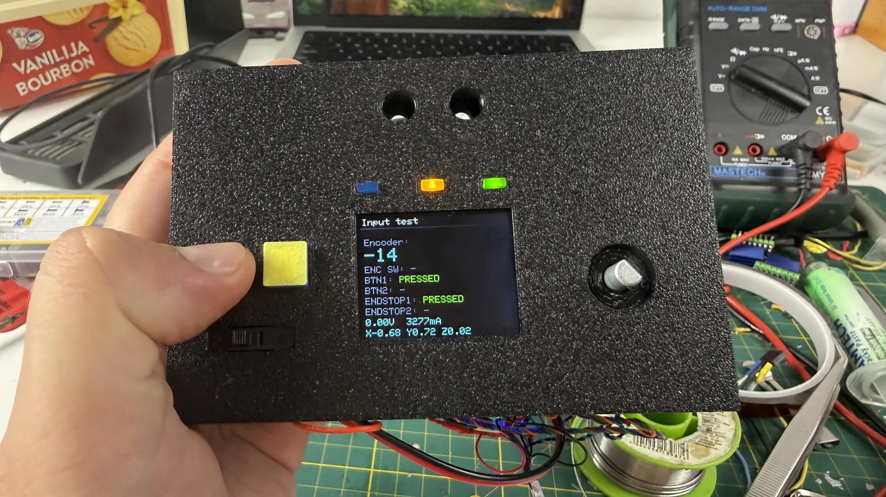
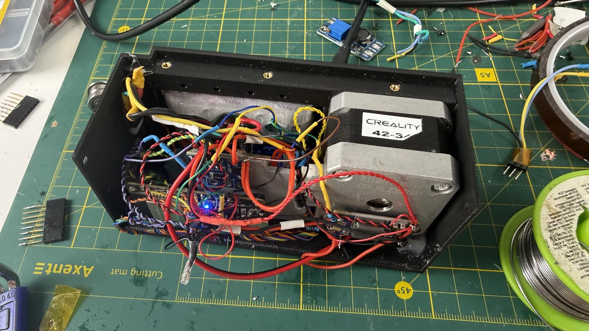

← all notes
10.08.2026#slider #electronics
Kept working on the slider today, and overall got it to what's basically a final version.
Toward the end I really let loose: crudely cutting parts with side cutters, carving stuff out with a soldering iron, gluing everything down with hot glue even where mounts were planned, and generally making a mess.
The main thing is the slider ended up working. Yes, there were a few issues with wires tearing off, but I didn't disassemble anything — just found a way to reach in everywhere and solder something to something. The result looks wild, but I'd like to believe I won't have to take it apart again anytime soon and it'll keep working fine.
Looks like there are even some free pins left on the ESP32, so I could add one of the potential extra devices or some functionality later.
The motor driver that wasn't working yesterday turned out to actually be damaged, so I replaced it with a new one. But that broken driver unexpectedly came in handy as a parts donor.
Turns out the INA226 module I'm using has a current limit of about 0.82 A — which wouldn't have worked for measuring current, since under load the slider's electronics draw more than an amp.
So I went to the electronics store website to pick out a new shunt resistor. Didn't work out, though: they don't carry small SMD shunt resistors, and I didn't want to cram in a big ceramic one.
Ended up wondering where else in electronics you'd find suitable resistors. One option turned out to be stepper motor drivers, and sure enough, a pair of the right resistors was sitting on that dead driver. Quickly desoldered them, soldered them in parallel with the shunt resistor on the INA226 board, and now I can measure current reasonably accurately.
I don't need much precision anyway, since I'm only planning to use the current reading to estimate runtime and battery state.
Now all that's left is closing the lid and mounting everything onto the slider's chassis itself. There's a problem with the lid though: the motor sticks out just slightly, by fractions of a millimeter. Not sure yet whether I'll reprint the lid or just sand down the existing one.
Reprinting the lid wouldn't take long, but it already has metal heat-set inserts melted into it, so I'd have to pull those out and melt them back in again.

Toward the end I really let loose: crudely cutting parts with side cutters, carving stuff out with a soldering iron, gluing everything down with hot glue even where mounts were planned, and generally making a mess.
The main thing is the slider ended up working. Yes, there were a few issues with wires tearing off, but I didn't disassemble anything — just found a way to reach in everywhere and solder something to something. The result looks wild, but I'd like to believe I won't have to take it apart again anytime soon and it'll keep working fine.

Looks like there are even some free pins left on the ESP32, so I could add one of the potential extra devices or some functionality later.
The motor driver that wasn't working yesterday turned out to actually be damaged, so I replaced it with a new one. But that broken driver unexpectedly came in handy as a parts donor.
Turns out the INA226 module I'm using has a current limit of about 0.82 A — which wouldn't have worked for measuring current, since under load the slider's electronics draw more than an amp.
So I went to the electronics store website to pick out a new shunt resistor. Didn't work out, though: they don't carry small SMD shunt resistors, and I didn't want to cram in a big ceramic one.
Ended up wondering where else in electronics you'd find suitable resistors. One option turned out to be stepper motor drivers, and sure enough, a pair of the right resistors was sitting on that dead driver. Quickly desoldered them, soldered them in parallel with the shunt resistor on the INA226 board, and now I can measure current reasonably accurately.
I don't need much precision anyway, since I'm only planning to use the current reading to estimate runtime and battery state.
Now all that's left is closing the lid and mounting everything onto the slider's chassis itself. There's a problem with the lid though: the motor sticks out just slightly, by fractions of a millimeter. Not sure yet whether I'll reprint the lid or just sand down the existing one.
Reprinting the lid wouldn't take long, but it already has metal heat-set inserts melted into it, so I'd have to pull those out and melt them back in again.
Comments